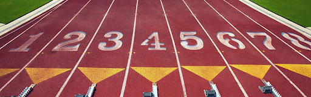

Koşu dalı, kısa mesafe hız, orta, uzun mesafe, engel ve bayrak koşularından oluşur. Bu yarışlar, kapalı salon ya da açık hava pistlerinde, yollarda ve kırlarda yapılabilir. Kısa mesafe hız koşuları, 400 metreye kadar olan koşulardır. Bu yarışmalarda atletler tüm mesafeyi baştan sona tam sürat koşarlar. Kısa mesafe koşuları, 100, 200 metre ve açık hava pistinin bir turuna eşit olan 400 m. yarışlarıdır. Kapalı salon pistleri ise daha kısadır. Dönemeçlerin eğimli olduğu 200 metrelik pistler çok yaygındır. Salonlardaki en kısa hız koşusu 50 metredir. Kısa mesafe koşucusu yarışa hızlı bir çıkışla başlar, iyice hızlandıktan sonra da hızını sürdürmeye çalışır.
Orta mesafe koşuları, 800 ve 1.500 metre yarışlarını kapsar. Teknik olarak hız koşusu sayılmakla birlikte, orta mesafe koşuları hız ve dayanıklılığın iyi bir taktik anlayışıyla birleştirilmesine dayanır. Son birkaç yıldır Türk bayan atlet Süreyya Ayhan, 1.500 metrenin en iyi koşucularından biri sayılmaktadır.

Uzun mesafe yarışları pistte 3.000, 5.000 ve 10.000 metre yarışlarını kapsar. Maraton ve yol parkurunda koşulan öteki yarışlar ise daha uzun mesafelerde yapılır. Son yıllarda uzun mesafe koşularına kadınlar da katılmaktadır. İlk kez 1969'da uluslararası bir yarışmada 1.500 metre koşan kadınlar, 1974'te 3.000 metre koşusuna, 1970 sonlarında da maraton yarışlarına katıldılar. Yalnızca erkeklerin koştuğu, 28 tahta engel ve 7 su engelinden oluşan 3.000 metre engelli yarışı dışında kalan tüm uzun mesafe koşularına kadınlar da katılırlar.
Dünyada yaygınlık kazanan uzun mesafe koşularından özellikle maraton yarışlarına katılan atlet sayısı giderek artmıştır. Günümüzde Londra ve New York maratonlarına her yıl on binlerce atlet katılmaktadır.
Öteki düz koşular ise, 4x100 ve 4x400 metre bayrak yarışlarıdır. Bayrak takımları dört koşucudan oluşur ve her koşucu yarışın eşit bir bölümünü koşar. Kendi bölümünü tamamlayan koşucu, bayrak denilen çubuğu bir sonraki bölümün koşucusuna verir.
Engelli koşularda 10'dan fazla engel vardır. Erkekler 110 metre ve kadınlar 100 metre yarışlarında, engeller 106,7 cm, 400 metre yarışında ise 91,4 cm yüksekliğindedir. Yürüyüş yarışları ise yürümekten doğmuştur. Kural gereği, ileriye atılan ayak gerideki ayak yerden kalkmadan yere değdirilir. Bu nedenle, bacakları kırmadan adım atmak gerekir. Yol parkurlarında yapılan yürüyüş yarışları mesafeleri, kadınlar için 10 kilometre, erkekler için 20 ve 50 kilometredir.